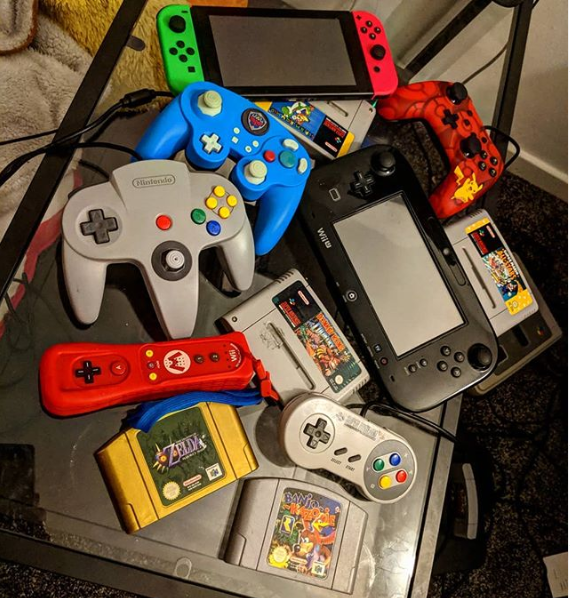

Growing up in the 90's I got to see technology evolve faster than anyone could keep up with and I loved it. As far back as I can remember I was obsessed with computers and gaming, from the SNES at the after school club that I’d hog constantly, to finally getting my very own Gameboy and playing Super Mario 2 for so long I’d go through so many batteries, even just getting to play the storybook point and click adventures in school. To this day I’m still hooked and comparing new games to what I grew up with still blows my mind. A lot of my time is taken up by gaming, I even recently set up a game room in my house including all my childhood consoles and a full set up for my PC, it’s my little piece of heaven. Though my total played time on world of Warcraft isn’t something I’m proud of(that's a lie), it's hard to let go of a character after being them for nearly 10 years.
Even though I’m a secret old lady, spending most of my time crocheting with my cat, it’s not all indoors. I’m also an axe thrower, I was part of a league over the last year and I’ve spent months working on the perfect throw, I can now almost hit the target sometimes! We also host a board game night once a week where we try and get through the hundreds of games we’ve all bought over the years, I rarely win because I can’t bluff to save my life but at least it’s an excuse to order pizza, but we’ve branched out into doing escape rooms together. My favourite one was where we were split into 2 teams in identical rooms and had to try and get out before the others (we obviously won that one otherwise it wouldn’t be my favourite).
After leaving school I realised I’d spent so many years working towards going to uni to do media that I never actually stopped to think about whether that’s what I even wanted, and it turned out it wasn’t for me. Looking back now I wish I’d realised my potential with IT and explored that back then but that just seemed like a hobby, instead I decided to go straight into work and ended up working my way up through a couple of companies as a buyer. Although I worked my way up quickly and felt I was always very good at my job I never really felt like I was working to my true potential, my tech skills were always just a bonus to help me through the mundane day-to-day tasks. I found in every job I ended up learning the systems so well that I was the go-to person for any tech issues, even having the IT department send people straight to me.
Whilst working at LateRooms I began gravitating more towards the tech side of the job rather than the relationship management, I took a Google Analytics course and spent a lot of time with the IT department to work on various faults we had with an outdated system. I finally felt like I was doing something worthwhile, getting problems resolved and working on something I truly understood, I even began working with the QA team in the hopes of moving over. Unfortunately it wasn’t to be as the company shut down soon after, but I never gave up on what I’d started learning, I tried learning Javascript and Python at home but struggled learning on my own. I knew it was something I wanted to keep trying with but I just didn't know how to get started on my own.

So when I was offered a chance to come learn with CodeNation I was thrilled to get a chance to not only get back into work but in a field I’d actually find interesting. There’s no greater feeling than trying something new and actually understanding it, even a rudimentary text based adventure game seemed so exciting because it was my code powering it. I’ve absolutely loved stepping out of my comfort zone and throwing myself into a new challenge and it’s been such a huge boost to my confidence after being out of work for a few months. It's really helped motivate me to keep working towards a career in IT after so long of struggling to find a way to just take that first step, this really is something I can see myself taking on, a job I can actually be proud of and invest myself into.